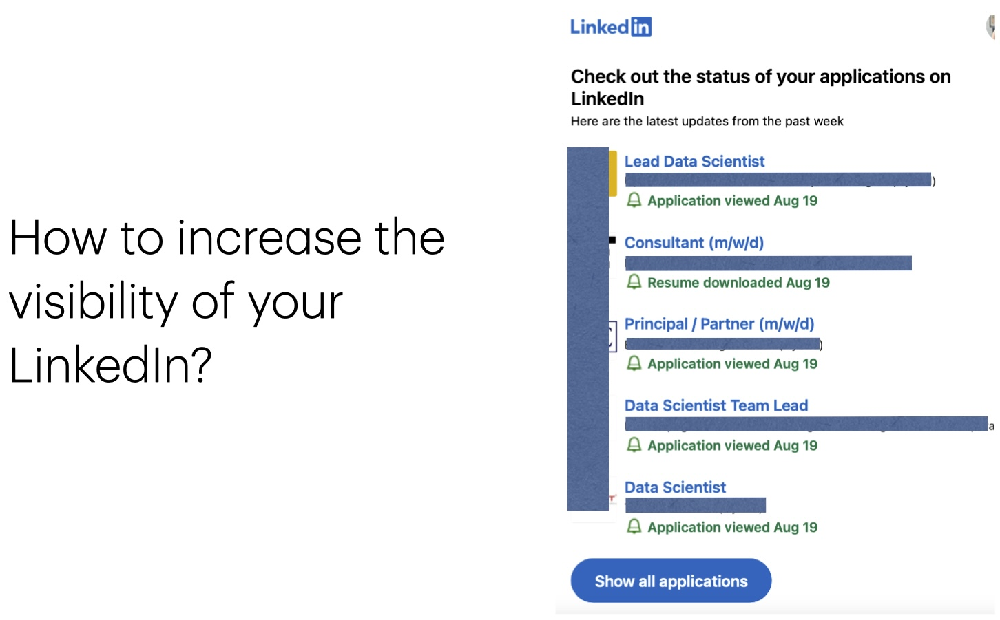
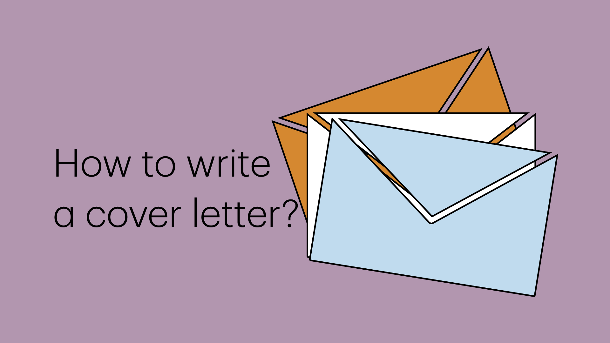

From lab to boardroom
We offer personalized support and strategic planning to help PhDs successfully transition into industry roles. The leap from academia to industry can be daunting. With the competitive job market and the unique challenges faced by PhDs, you might be asking yourself:
- How do I translate my academic skills to industry?
- What roles are available for someone with my background?
- How can I make my CV stand out in the industry?
- What are the key differences in applying for industry jobs?”
The Solution: Industry Career Coaching
We provide expert, hands-on support and strategic planning for PhDs entering the industry. Our coaches, who have successfully transitioned themselves, offer insights from both academic and industry perspectives. We have helped numerous clients navigate this transition smoothly.
We can help you:
- Tailor your CV to highlight industry-relevant skills
- Revamp your LinkedIn to highlight industry-relevant skills
- Prepare for industry-specific interview questions
- Receive ongoing guidance throughout your job search
- Identify and pursue the right roles for your skill set
- Strategically time your job applications
- Demonstrate your value to potential employers
- Develop a comprehensive career plan
What sets us apart
Experience
Our coaches have firsthand experience in both academia and industry. They use this insider knowledge to help you stand out and achieve your career objectives.
Personalized Support
We offer continuous support throughout your transition. Our coaching includes weekly calls, email support, and document reviews to ensure you’re fully prepared.
Industry Insights
We stay informed about current industry trends to provide you with the most relevant strategies for success.
Our services

Industry optimized CV solutions
Are you struggling to translate your academic brilliance into an industry-winning CV?Our Industry-Optimized CV Solutions service helps you transform your academic achievements into a compelling, industry-ready CV. We provide tailored feedback to enhance clarity and ensure compatibility with applicant tracking systems (ATS), helping you stand out to recruiters. By highlighting industry-relevant skills and experiences, we increase your chances of getting noticed and securing interviews.
Book service Checkout the package

From Invisible to Influential: LinkedIn Success
Boost your professional presence with our LinkedIn Optimization service. We conduct a comprehensive audit to enhance your profile, integrating industry-specific keywords to increase visibility. Our personalized plan focuses on crafting compelling content for your headline, summary, and work experience, ensuring your profile attracts recruiter interest. With improved professional branding and effective networking strategies, you can increase the chances of your applications being viewed and your resume downloaded.
Book service Checkout the package
Your first impression: tailored cover letter writing
Create a powerful cover letter that captures your skills and aligns with job requirements. Our Tailored Cover Letter Writing service provides personalized guidance to ensure your cover letter effectively communicates your strengths and enthusiasm for the role. Make a lasting impression with a cover letter that complements your resume and sets you apart from other candidates.
Book service Checkout the packageLife of an Expat
"Life of an Expat" offers you direct, personalized guidance for your journey abroad. As an experienced expatriate, I'm here to answer your specific questions about living in a foreign country, especially in Europe. Whether you're planning your first move abroad, already living overseas and facing challenges, or considering a move to a new country, I'm here to address your concerns.
This 1:1 service allows you to:
- Ask tailored questions about your unique expat situation.
- Get personalized advice based on real-life experiences.
- Receive clear, actionable answers to your expat-life queries.
Topics Covered:
- Visa processes and legal requirements
- Finding accommodation and setting up utilities
- Navigating healthcare systems and insurance
- Managing finances across borders
- Adapting to new cultures and social norms
- Overcoming language barriers
- Building a social network in a new country